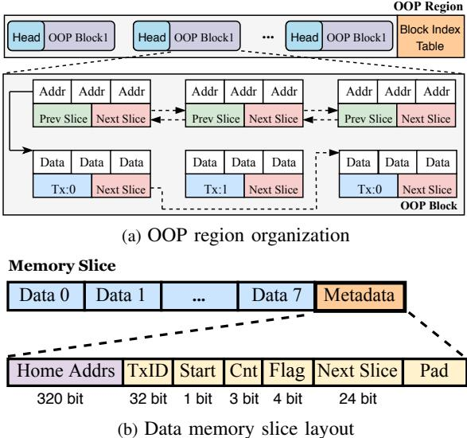
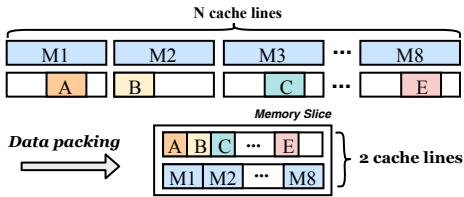
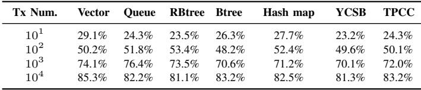
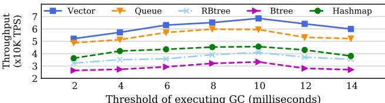

HOOP: Efficient Hardware-Assisted Out-of-Place Update for Non-Volatile Memory 论文解析¶
0. 论文基本信息¶
作者 (Authors): Miao Cai, Chance C. Coats, Jian Huang
发表期刊/会议 (Journal/Conference): unknown
发表年份 (Publication Year): 2020
研究机构 (Affiliations): Nanjing University, University of Illinois at Urbana-Champaign
1. 摘要¶
目的
- 解决现有非易失性内存（NVM）崩溃一致性技术（如日志、影子分页）存在的高写放大和关键路径性能开销大的核心问题。
- 提出一种透明、高效的硬件辅助方案，在保证原子持久性的同时，显著降低写流量和执行延迟。
方法
- 提出 HOOP (Hardware-Assisted Out-of-Place Update) 机制，其核心思想是将更新数据写入NVM中的新位置（OOP区域），同时保留旧数据，直到新数据持久化。
- 在内存控制器中设计了一个轻量级的间接层，包含以下关键组件：
- OOP数据缓冲区：在事务执行期间缓冲更新，并应用数据打包（data packing） 技术，将多个细粒度更新压缩到单个缓存行中，减少写流量。
- 物理到物理地址映射表：一个小型哈希表，用于将数据的“家地址”（home address）映射到其在OOP区域中的最新位置，确保加载操作能读取到最新数据。
- 自适应垃圾回收（GC）：后台运行的GC算法，周期性地将OOP区域中的最新数据迁移回其原始“家地址”。该过程采用数据合并（data coalescing） 策略，对同一缓存行的多次更新只写回一次，进一步减少写放大。
- 快速并行恢复：系统崩溃后，利用多核线程并行扫描OOP区域，根据提交的事务日志快速恢复到一致状态。
- 整个方案对上层软件透明，无需修改TLB或使用非易失性缓存。
 Fig. 2: Hardware-assisted out-of-place update with HOOP. HOOP performs out-of-place writes and reduces write traffic with data packing and coalescing. To reduce the storage overhead, HOOP adaptively migrates data in the out-of-place (OOP) region back to the home region with optimized GC.
Fig. 2: Hardware-assisted out-of-place update with HOOP. HOOP performs out-of-place writes and reduces write traffic with data packing and coalescing. To reduce the storage overhead, HOOP adaptively migrates data in the out-of-place (OOP) region back to the home region with optimized GC.
结果
- 性能提升：与包括Opt-Redo、Opt-Undo、OSP、LSM和LAD在内的最先进崩溃一致性技术相比，HOOP将应用性能最高提升了 1.7倍。
- 写放大降低：通过数据打包和合并，HOOP将写放大最高降低了 2.1倍，显著优于基线方法。
- 低关键路径延迟：HOOP的关键路径延迟非常接近无持久性保证的原生系统，平均仅高出 24.1%。
- 高效恢复：数据恢复能力随核心数扩展，在高带宽下（>25 GB/s）可在 47毫秒 内恢复1GB的OOP区域数据。
| 对比指标 | HOOP vs. Opt-Redo | HOOP vs. Opt-Undo | HOOP vs. OSP | HOOP vs. LSM |
|---|---|---|---|---|
| 吞吐量提升 | 74.3% | 45.1% | 33.8% | 27.9% |
| 关键路径延迟降低 | 45.1% | 52.8% | 44.3% | 60.5% |
| 写流量降低 | 2.1× | 1.9× | 21.2% | 12.5% |
 Fig. 8: Write traffic produced by different approaches.
Fig. 8: Write traffic produced by different approaches.
结论
- HOOP 通过硬件辅助的异地更新（Out-of-Place Update） 范式，成功解耦了数据持久化与程序执行的关键路径。
- 其结合数据打包、数据合并和自适应垃圾回收的轻量级设计，在提供强原子持久性保证的同时，实现了低写放大和高吞吐量。
- 该方案仅需对内存控制器进行最小化硬件修改（约4.25%面积开销），具有很高的实用性和可部署性，为NVM系统的高效持久化提供了新的有效途径。
2. 背景知识与核心贡献¶
研究背景与动机
- Byte-addressable Non-Volatile Memory (NVM) 技术（如 3D XPoint）结合了近似 DRAM 的性能和可扩展的大容量，但其应用必须解决 memory persistency 问题，以确保系统崩溃时的数据 crash consistency。
- 现有的主流 crash-consistency 技术存在显著缺陷：
- Logging (日志)：无论是 undo 还是 redo 日志，都需要为每次更新写入额外的日志数据，导致 write amplification 高达 2 倍，不仅降低性能，还损害 NVM 寿命。此外，强制 persistence ordering 需要频繁的 cache flush 和 memory fence 指令，引入严重的 critical-path latency。
- Shadow Paging (影子分页)：采用 copy-on-write (CoW) 机制，即使只修改少量数据也要复制整个页面，同样造成高 write amplification。细粒度优化方案（如 cache-line 级别）则需要复杂的 TLB modifications，带来新的性能开销。
- Log-structured NVM：虽然减少了双写问题，但每次读取都需要通过软件索引树（如 skip list）查找最新数据位置，导致 O(log N) 的内存访问次数，显著增加 read latency。
- 这些方案要么在 critical path 上引入巨大开销，要么产生过多的 NVM write traffic，或者两者兼有，难以兼顾高性能与低开销。
 Fig. 1: Illustration of different crash-consistency techniques. (a) Logging technique requires that both logs and data must be persisted, which incurs double writes; (b) Shadow paging maintains two copies of data, it suffers from copy-on-write overhead; (c) Log-structured NVM alleviates the double writes, but it suffers from significant overhead of index lookup; (d) Our hardware-assisted out-of-place update reduces the write amplification significantly, while providing efficient data accesses.
Fig. 1: Illustration of different crash-consistency techniques. (a) Logging technique requires that both logs and data must be persisted, which incurs double writes; (b) Shadow paging maintains two copies of data, it suffers from copy-on-write overhead; (c) Log-structured NVM alleviates the double writes, but it suffers from significant overhead of index lookup; (d) Our hardware-assisted out-of-place update reduces the write amplification significantly, while providing efficient data accesses.
核心贡献
- 提出 HOOP (Hardware-Assisted Out-of-Place Update)，一种透明、高效的硬件辅助 out-of-place update 机制，旨在同时实现 low critical-path latency 和 small write amplification。
- 在 memory controller 中设计了一个轻量级的 indirection layer，包含以下关键组件：
- OOP Data Buffer：在控制器中为每个核心设置缓冲区，对事务中的更新进行 data packing，将多个 word 级别的更新及其元数据打包成一个 memory slice 再写入 NVM，有效利用带宽并减少写流量。
- Hash-based Address-Mapping Table：维护一个物理到物理的地址映射表，使 Load 操作能透明地读取最新数据，且该表大小可控，因为条目会在 Garbage Collection (GC) 后被清理。
- Adaptive Garbage Collection with Data Coalescing：后台 GC 进程周期性地将 OOP 区域中的最新数据迁移回其原始 home region。通过 data coalescing 机制，将对同一缓存行的多次更新合并为一次写回，极大减少了 GC 过程中的额外写流量。
- Fast Multi-core Data Recovery：系统崩溃后，利用多核并行扫描 OOP 区域，快速恢复到一致状态，展现出良好的可扩展性。
- HOOP 的方案完全在硬件层面实现，对上层软件透明，无需修改 CPU 缓存、TLB 或要求程序员插入持久化指令。
- 实验评估表明，与最先进的技术相比，HOOP improves application performance by up to 1.7×，同时 reduces the write amplification by up to 2.1×，其关键路径延迟非常接近无持久化保证的原生系统。
Fig. 2: Hardware-assisted out-of-place update with HOOP. HOOP performs out-of-place writes and reduces write traffic with data packing and coalescing. To reduce the storage overhead, HOOP adaptively migrates data in the out-of-place (OOP) region back to the home region with optimized GC.
3. 核心技术和实现细节¶
0. 技术架构概览¶
整体技术架构
HOOP (Hardware-Assisted Out-of-Place Update) 的核心架构是在内存控制器中实现一个轻量级的、透明的间接层，以支持高效的out-of-place (OOP) 更新，从而保证 NVM 的原子持久性 (atomic durability)，同时最小化写放大和关键路径延迟。
- 基本工作流:
- 应用程序通过
Tx_begin和Tx_end指令界定需要原子持久性的事务区域。 - 在事务执行期间，所有被修改的数据（store 操作）不会直接写回其原始位置（称为 home region），而是被暂存并最终持久化到 NVM 中一个专用的、日志结构化的区域（称为 OOP region）。
- 读取操作（load 操作）会通过内存控制器中的地址映射表，透明地定位到最新的数据版本（可能在 OOP region 或 home region）。
- 系统通过后台的垃圾回收 (Garbage Collection, GC) 机制，周期性地将 OOP region 中的最新数据迁移回其 home region，并清理旧版本，以回收空间并减少长期写放大。
- 发生系统崩溃后，利用 OOP region 中保存的已提交事务数据，通过多线程并行的方式快速恢复系统到一致状态。
- 应用程序通过
Fig. 2: Hardware-assisted out-of-place update with HOOP. HOOP performs out-of-place writes and reduces write traffic with data packing and coalescing. To reduce the storage overhead, HOOP adaptively migrates data in the out-of-place (OOP) region back to the home region with optimized GC.
核心组件
-
OOP 数据缓冲区 (OOP Data Buffer):
- 位于内存控制器中，每个核心拥有一个专用的 1KB 缓冲区。
- 用于暂存事务中修改的缓存行及其元数据（home region 地址）。
- 支持数据打包 (data packing)：将多个独立缓存行中的细粒度（word-level）更新压缩到一个 memory slice（128字节）中，显著减少写流量。
-
地址映射表 (Address Mapping Table):
- 一个位于内存控制器中的哈希表，用于维护从 home region 物理地址到 OOP region 物理地址的映射。
- 该表是物理到物理 (physical-to-physical) 的映射，对上层软件完全透明，避免了 TLB 修改和 shootdown 开销。
- 表项在 GC 将数据迁回 home region 后会被移除，因此其大小可控（默认 2MB）。
-
OOP 区域组织 (OOP Region Organization):
- OOP region 被组织成日志结构 (log-structured)，由多个固定大小（2MB）的 OOP blocks 组成。
- 每个 OOP block 由固定大小（128字节）的 memory slices 填充。
- Memory slices 分为两类：data memory slice（存放实际数据和元数据）和 address memory slice（存放大型事务的起始地址，便于 GC 和恢复）。
 Fig. 5: Layout of the OOP region. HOOP organizes the OOP region in a log-structured manner. Each OOP block consists of memory slices with a fixed size. There are two types of memory slices: data memory slice and address memory slice.
-
垃圾回收与数据合并 (Garbage Collection and Data Coalescing):
- GC 在后台周期性运行（默认每 10ms）。
- GC 扫描 OOP blocks 中已提交的事务，并采用逆时间顺序 (reverse time order) 处理。
- 通过数据合并 (data coalescing) 技术，将对同一 home 地址的多次更新合并为一次写入，极大减少了迁回 home region 时的写流量。
- GC 过程本身也是崩溃安全的。
-
驱逐缓冲区 (Eviction Buffer):
- 一个小型缓冲区（默认 128KB），用于在 GC 迁移数据期间暂存被驱逐的缓存行。
- 确保在地址映射表项被移除后，LLC miss 仍能读取到最新数据，防止读取陈旧数据。
数据访问流程
-
Store 操作:
- 修改后的数据被标记并发送到内存控制器。
- HOOP 将其存入对应核心的 OOP 数据缓冲区。
- 当缓冲区满或遇到
Tx_end时，数据被打包成 memory slice 并持久化到 OOP region。
-
Load 操作:
- LLC miss 时，请求被发送到内存控制器。
- 控制器首先查询地址映射表。
- 若命中，则从 OOP region 读取数据，并与 home region 的原始数据（并行读取）合并以重构最新缓存行。
- 若未命中，则检查驱逐缓冲区，最后才从 home region 读取。
 Fig. 6: The load and store procedure in HOOP.
Fig. 6: The load and store procedure in HOOP.
1. Hardware-Assisted Out-of-Place (OOP) Update¶
核心机制与实现原理
- HOOP 的核心思想是 Hardware-Assisted Out-of-Place (OOP) Update，即在 NVM 中为更新的数据分配一个新位置进行写入，同时保留原始位置（称为 home region）的旧数据，直到新数据被持久化。这种机制天然地保证了原子性：系统崩溃时，要么读取到完整的旧数据，要么读取到完整的、已提交的新数据。
- 为了支持 OOP 更新，HOOP 在内存控制器中引入了一个轻量级的间接层 (indirection layer)，负责将逻辑上的 home region 地址映射到物理上可能位于 OOP 区域的新地址。
- 整个方案对上层软件完全透明，应用程序只需使用简单的
Tx_begin和Tx_end指令来界定需要原子持久化的事务区域，无需手动插入缓存刷新 (clwb) 或内存屏障 (mfence) 指令。
关键组件与算法流程
-
OOP 数据缓冲区 (OOP Data Buffer):
- 位于内存控制器中，每个核心拥有一个专用的 1KB 缓冲区条目，用于暂存事务中修改的数据。
- 采用字粒度 (word granularity) 跟踪更新，而非传统的缓存行粒度，以适应细粒度写入的应用场景。
- 应用数据打包 (data packing) 技术：将最多 8 个独立的 8 字节数据更新及其元数据压缩到一个 128 字节的单元中，称为 memory slice。这显著减少了写入 NVM 的流量。
-  Fig. 3: Data packing in HOOP.
-
OOP 区域组织 (OOP Region Organization):
- OOP 区域在 NVM 中以日志结构 (log-structured) 方式组织，由多个 2MB 的 OOP block 组成。
- 每个 OOP block 由固定大小的 memory slice 填充。Memory slice 分为两类：
- Data memory slice: 存储实际的更新数据和元数据（包括 home 地址、事务 ID、下一个 slice 的偏移等）。
- Address memory slice: 存储一个事务中所有 data memory slice 的起始地址，便于垃圾回收 (GC) 和恢复时快速定位。
- Fig. 5: Layout of the OOP region. HOOP organizes the OOP region in a log-structured manner. Each OOP block consists of memory slices with a fixed size. There are two types of memory slices: data memory slice and address memory slice.
-
地址映射表 (Address Mapping Table):
- 一个位于内存控制器中的哈希表，用于维护从 home region 物理地址 到 OOP region 物理地址 的映射。
- 默认大小为 2MB（256KB/核），用于跟踪所有尚未被 GC 回 home region 的 OOP 数据。
- 在 LLC (Last-Level Cache) 未命中时，硬件会自动查询此表以确定是从 home region 还是 OOP region 读取最新数据。
- 当 GC 将数据迁回 home region 后，对应的映射表项会被移除，从而控制表的大小。
-
垃圾回收 (Garbage Collection, GC):
- 目标: 将 OOP 区域中的最新数据版本迁移回其 home region，以释放 OOP 空间并减少长期存储开销。
- 流程:
- 周期性触发（默认每 10 毫秒）。
- 扫描 OOP block 中的 committed transactions，并按时间逆序处理。
- 使用一个临时哈希表 H 进行数据合并 (data coalescing)：对于同一 home 地址的多次更新，只保留最新的那个。这极大地减少了写回 home region 的流量。
- 将哈希表 H 中的数据批量写回 home region，并从地址映射表中移除相应条目。
- 标记已清空的 OOP block 为
BLK_UNUSED。
- 优势: 通过数据合并，HOOP 能显著降低 GC 引入的额外写入。实验表明，当事务数超过 10^4 时，写回 home region 的数据量可减少 85% 以上。
-  TABLE IV: Average data reduction in the GC of HOOP.
-
数据恢复 (Data Recovery):
- 系统崩溃后，利用 OOP 区域中保存的已提交事务数据进行恢复。
- 利用多核并行: 操作系统创建多个恢复线程。
- 流程:
- 主线程收集所有 committed transaction 的地址，并按提交顺序排序。
- 将这些地址以轮询方式分发给各个恢复线程。
- 每个线程独立扫描分配给它的事务，构建本地哈希表，仅保留每个地址的最新值。
- 主线程聚合所有本地哈希表，形成全局最新状态。
- 多个线程并行地将全局状态写回 home region。
- 可扩展性: 恢复速度随线程数和内存带宽线性增长。
 Fig. 11: Recovery performance of 1GB OOP region with various number of recovery threads and memory bandwidth.
Fig. 11: Recovery performance of 1GB OOP region with various number of recovery threads and memory bandwidth.
输入输出关系及整体作用
- 输入: 来自 CPU 核心的普通 Load/Store 指令，以及界定事务边界的
Tx_begin/Tx_end指令。 - 输出: 对应用程序而言，是符合原子持久性 (atomic durability) 语义的内存操作；对 NVM 而言，是经过优化的、低写放大倍数的数据流。
- 在整体系统中的作用:
- 解耦持久性与性能: 通过 OOP 写入，消除了传统日志方法中强制的持久化顺序 (
persist ordering)，允许 Store 指令在关键路径上以常规的乱序方式执行，从而大幅降低关键路径延迟。 - 消除日志开销: 旧数据本身就是“日志”，因此无需额外的日志写入，显著降低了写放大 (write amplification)。
- 提供透明性: 所有复杂性被封装在内存控制器的硬件中，对操作系统和应用程序完全透明，简化了 NVM 编程模型。
- 保障高效恢复: 利用 OOP 区域的日志结构和多核并行，实现了快速且可扩展的崩溃恢复能力。
- 解耦持久性与性能: 通过 OOP 写入，消除了传统日志方法中强制的持久化顺序 (
性能指标与参数设置摘要
| 组件/参数 | 默认值/规格 | 作用/影响 |
|---|---|---|
| OOP Region Size | NVM 总容量的 10% | 存储 OOP 更新的专用空间 |
| OOP Data Buffer | 1KB / core | 暂存事务更新，支持数据打包 |
| Address Mapping Table | 2MB (256KB/core) | 跟踪 OOP 数据位置，控制其大小是 GC 触发条件之一 |
| Eviction Buffer | 128KB | 在 GC 期间暂存被驱逐的缓存行，防止读取陈旧数据 |
| GC Trigger Period | 10 毫秒 | 平衡数据合并效率与 OOP 空间压力 |
| Memory Slice Size | 128 bytes | 包含最多 8 个 8-byte 数据 + 64-byte 元数据 |
| OOP Block Size | 2MB | GC 和空间管理的基本单位 |
| Area Overhead | 4.25% | 相对于 Sandy Bridge 处理器的面积开销 |
2. Lightweight Indirection Layer in Memory Controller¶
核心组件与实现原理
- HOOP 的 Lightweight Indirection Layer 是其实现透明、高效 Out-of-Place (OOP) Update 的关键，它被完全集成在 memory controller 中，对上层软件完全透明。
- 该层的核心是一个 hash-based physical-to-physical address mapping table（物理到物理地址映射表），用于追踪那些已被更新但尚未通过 Garbage Collection (GC) 迁移回其 home region 的缓存行（cache line）在 OOP region 中的新位置。
- 输入: 来自 LLC (Last-Level Cache) 的内存访问请求，包含目标数据的 home-region physical address。
- 输出:
- 对于 load 操作：返回数据的实际物理地址（可能在 home region 或 OOP region），并最终将正确的数据返回给处理器。
- 对于 store 操作：将更新后的数据及其 home-region address 写入 OOP data buffer，并在必要时触发到 OOP region 的写入，并在映射表中创建新条目。
地址映射表 (Mapping Table) 详解
- 功能: 维护一个从 home-region address 到 OOP-region address 的映射关系。
- 结构: 一个共享的哈希表，由所有核心共用。
- 条目内容: 每个条目包含 home-region address 和对应的 OOP-region address。
- 大小与管理:
- 默认配置为 2MB（每个核心 256KB）。
- 表的大小直接关联于两次 GC 操作之间可能产生的 OOP 更新数量。合理的大小可以避免频繁 GC。
- 条目会在两种情况下被移除：
- GC 完成后: 当 OOP region 中的最新数据被成功迁移回 home region 后，对应的映射条目会被清除。
- Cache Hit in LLC: 当一个 LLC miss 触发了对映射表的查询并命中后，数据被加载到缓存层次结构中。此时，由于缓存一致性协议能保证后续访问的正确性，该映射条目会被移除，因为最新的数据已在缓存中。
- 优势: 相比于软件方案（如 LSNVMM）或需要修改 TLB 的方案（如 OSP），硬件实现的地址翻译避免了昂贵的 TLB shootdown 和软件开销，实现了 trivial address translation overhead。
辅助缓冲区: Eviction Buffer
- 功能: 在 GC 过程中，当数据从 OOP region 被写回到 home region 时，这些被写回的缓存行会暂时存放在 eviction buffer 中。
- 目的: 确保在映射表条目被移除后、数据最终落盘前，如果发生 LLC miss，系统仍能读取到最新的数据版本，而不是 home region 中可能已过时的旧数据。
- 工作流程:
- LLC miss 时，首先查询 mapping table。
- 若未命中，则查询 eviction buffer。
- 若仍未命中，才从 home region 读取。
- 大小: 默认为 128KB，因其仅需缓存 GC 过程中的小粒度数据，故容量需求很小。
整体工作流程 (以 Load/Store 为例)
Fig. 6: The load and store procedure in HOOP.
- Load 操作流程:
- 处理器发出 load 请求，经缓存层次到达 LLC。
- 若 LLC miss，请求连同 home-region address 被发送至 memory controller。
- Memory controller 查询 mapping table。
- Hit: 并行地从 OOP region 和 home region 读取数据（因为 OOP region 中只存储了更新的部分字）。利用 metadata 信息将 OOP 中的新数据与 home region 中的旧数据 reconstruct 成完整的最新缓存行。
- Miss: 检查 eviction buffer，若命中则返回数据；否则直接从 home region 读取。
- Store 操作流程:
- 在事务中被修改的缓存行，在被驱逐出缓存或事务结束时，其数据和 home-region address 会被发送到 memory controller。
- Memory controller 将其暂存于 per-core 的 OOP data buffer 中，并进行 data packing。
- 当 buffer 满或遇到 Tx end 指令时，打包后的 memory slice 被写入 OOP region。
- 同时，在 mapping table 中创建一个新的映射条目，记录该 home address 现在指向 OOP region 中的新位置。
在 HOOP 整体架构中的作用
- 实现原子持久性: 通过确保更新总是先安全地写入 OOP region，再异步迁移，天然保证了 atomic durability。系统崩溃后，只需重放 OOP region 中的 committed transaction 即可恢复。
- 消除持久化排序开销: 由于更新是 out-of-place 的，store 操作无需任何 persistence ordering（如 clflush, mfence），可以像在普通 DRAM 上一样乱序执行，极大降低了 critical-path latency。
- 支撑高效 GC 与 Recovery: 映射表为 Garbage Collection 提供了精确的数据位置信息，使其能高效地将最新数据迁回 home region。同样，在 Data Recovery 阶段，系统通过扫描 OOP region 并结合映射逻辑来重建一致状态。
- 维持透明性: 整个机制对应用程序和操作系统完全透明，无需修改现有软件栈或编程模型。
3. Data Packing and Memory Slice Organization¶
数据打包与内存切片组织原理
- HOOP 的核心创新之一在于其 数据打包 (Data Packing) 机制，该机制旨在将细粒度的更新高效地写入 NVM，从而显著降低 写放大 (Write Amplification)。
- 传统方案（如 logging）通常以 缓存行 (Cache Line) 为单位进行持久化，即使只修改了其中几个字节，也会导致整个 64 字节的缓存行被写入，造成带宽和 NVM 寿命的浪费。
- HOOP 反其道而行之，它在 内存控制器 中追踪 字 (Word) 粒度（8 字节）的数据更新，并将多个独立的字更新 打包 (Pack) 到一个更大的、固定大小的单元中，即 内存切片 (Memory Slice)。
内存切片 (Memory Slice) 的内部结构
- 每个 内存切片 的固定大小为 128 字节。这个尺寸经过精心设计，可以利用两个连续的内存突发 (memory bursts) 高效地完成写入。
- 一个内存切片被划分为 数据区 和 元数据区 两部分：
- 数据区: 最多可容纳 8 个 8 字节的 数据 (Data) 更新。
- 元数据区: 固定为 64 字节，用于存储与这 8 个数据更新相关的关键信息。
- 元数据区包含以下关键字段：
- Home Addresses: 每个数据字在其 Home Region 中的原始地址（反向映射），用于后续的垃圾回收 (GC) 和恢复。
- Next Slice Offset: 一个 24-bit 的偏移量，用于链接属于同一个大事务的多个内存切片，形成一个链表。
- Transaction ID (TxID): 一个 32-bit 的事务标识符，由内存控制器在事务开始时分配，用于在恢复时确定更新的顺序。
- First Slice Flag: 一个比特位，用于标记此切片是否为该事务的第一个切片。
- Word Count: 一个 3-bit 的计数器，记录此切片中实际包含的有效数据字数量（0-8）。
- Slice State Flag: 一个 4-bit 的标志，用于 GC 和恢复过程中的状态管理。
Fig. 3: Data packing in HOOP.
OOP 区域的组织与写入流程
- 所有打包好的内存切片都被追加写入到一个专用的 OOP Region (Out-of-Place Region) 中。
- OOP Region 采用 日志结构 (Log-Structured) 组织方式，这意味着写入操作是 顺序的 (Sequential)，能最大化利用 NVM 的写入带宽并减少碎片。
- OOP Region 被进一步划分为多个 OOP Block（默认每个 2MB）。每个 Block 的头部包含索引号、指向下一个 Block 的指针以及状态标志（如 BLK_FULL, BLK_GC）。
- 内存控制器维护一个 OOP Data Buffer（每个核心 1KB）来暂存正在打包的数据和元数据。
- 数据从 OOP Data Buffer 刷新到 OOP Region 的触发条件有两个：
- 缓冲区满: 当一个事务的更新填满了缓冲区（即凑够 8 个字），会立即打包成一个内存切片并写入。
- 事务提交: 当处理器执行 Tx end 指令时，无论缓冲区是否满，都会将剩余数据打包并强制刷新到 OOP Region，以确保事务的 原子持久性 (Atomic Durability)。
Fig. 5: Layout of the OOP region. HOOP organizes the OOP region in a log-structured manner. Each OOP block consists of memory slices with a fixed size. There are two types of memory slices: data memory slice and address memory slice.
在整体架构中的作用与优势
- 输入: 来自 CPU 核心的、在事务中发生的 字粒度 Store 操作。
- 处理: 在内存控制器中进行 追踪、缓冲、打包，生成包含数据和完整元数据的 128-byte Memory Slice。
- 输出: 将内存切片 顺序写入 OOP Region，并在 地址映射表 (Address Mapping Table) 中建立从 Home 地址到 OOP 地址的映射。
- 这一机制在整体 HOOP 架构中扮演了承上启下的关键角色：
- 对上 (CPU): 它消除了软件层对 clwb 和 mfence 指令的依赖，因为持久化顺序由硬件在 OOP 区域内隐式保证，从而极大缩短了 关键路径延迟 (Critical-Path Latency)。
- 对下 (NVM): 它通过字粒度打包，将原本可能需要多次缓存行写入的操作，压缩到更少的 128-byte 写入中，直接降低了 写流量 (Write Traffic)。
- 对 GC: 它为后续的 垃圾回收 (Garbage Collection) 提供了结构化的数据单元。GC 算法可以高效地扫描这些内存切片，利用其中的元数据（特别是 Home Addresses 和 TxID）进行 数据合并 (Data Coalescing)，最终将最新数据批量写回 Home Region，进一步减少写放大。
4. Adaptive Garbage Collection with Data Coalescing¶
核心机制与设计目标
HOOP 的 Adaptive Garbage Collection (GC) 机制是其降低 write amplification 和节省 NVM 空间开销的核心。其根本目标是在后台将 Out-of-Place (OOP) region 中的最新数据版本迁移回 home region，同时通过 Data Coalescing 技术将对同一地址的多次更新合并为一次写入，从而最小化写流量。
- 触发方式: GC 作为一个 background 进程周期性执行，默认周期为 10 毫秒。
- 作用域: GC 以 OOP block 为单位进行操作，每个 OOP block 大小为 2MB。
- 关键挑战:
- 避免因频繁迁移旧数据版本而产生大量不必要的写操作。
- 确保 GC 过程本身是 crash-safe 的，即系统在 GC 执行中崩溃后仍能恢复到一致状态。
算法流程详解
GC 的具体工作流程由 Algorithm 1 描述，其核心在于 reverse-time-order scanning 和 hash-map-based coalescing。
- 输入: 一个或多个状态为 BLK_FULL 的 OOP block。
- 输出: 数据被写回 home region，对应的 OOP block 状态被重置为 BLK_UNUSED，相关的 mapping table 条目被清理。
- 详细步骤:
- 定位事务: 首先，GC 读取 OOP block 中的 address memory slice，以获取所有已提交 (committed) 事务的起始地址。
- 逆序扫描: 从最新的事务开始，反向遍历 OOP block 中的所有已提交事务。这种逆序策略是实现高效 coalescing 的关键。
- 数据合并 (Coalescing):
- 为本次 GC 操作创建一个临时的 hash map H。
- 对于扫描到的每一个数据更新（包含 home-region address, TxID, 和 Data），检查其 home-region address 是否已在 H 中。
- 如果 H 中已存在该地址的条目，则跳过当前更新（因为逆序扫描保证了 H 中的数据版本更新）。
- 如果 H 中不存在该地址，则将
<home-region address, Data, TxID>作为新条目加入 H。 - 通过此过程，H 最终只保留每个 home-region address 的最新数据版本。
- 批量写回: 遍历完成后，将 hash map H 中的所有数据批量写回到它们各自的 home region 地址。
- 元数据清理:
- 在写回过程中，对于每个写回的地址，检查 mapping table (MT)。
- 如果该地址存在于 MT 中，则将其条目移除，因为最新数据现在已位于 home region。
- 块回收: 更新 OOP block 的头部，将其状态设为 BLK_UNUSED，并清除其在 block index table 中的记录，使其可供后续的 OOP 写入重用。
Fig. 5: Layout of the OOP region. HOOP organizes the OOP region in a log-structured manner. Each OOP block consists of memory slices with a fixed size. There are two types of memory slices: data memory slice and address memory slice.
在整体架构中的作用与优势
该 GC 机制是 HOOP 实现高性能和低写放大的关键一环，它与 OOP 写入、地址映射等组件紧密协同。
- 降低写放大: Data Coalescing 是核心优势。如 Table IV 所示，随着事务数量的增加，data reduction ratio 显著提升。当事务数超过 10^4 时，得益于数据局部性，需要写回 home region 的数据量可降至原始更新量的 15% 以下。
- 维持低映射表开销: 通过定期将数据迁回 home region 并清理 mapping table，确保了该硬件表的大小可以保持在一个较小且固定的水平（默认 2MB），避免了其成为性能瓶颈。
- 保障 Crash-Safety: GC 过程本身不破坏数据一致性。即使在 GC 执行中发生崩溃，系统也可以通过标准的 data recovery 流程（同样基于 OOP region 中的完整事务日志）来恢复，因为 OOP region 始终保存着完整的、可重放的更新历史。
- 性能权衡: GC 的触发频率是一个关键参数。如 Figure 10 所示，过于频繁的 GC（如 2ms）会减少 coalescing 的机会，增加写流量；而过于稀疏的 GC（如 >11ms）则可能导致 OOP region 空间耗尽，迫使 GC 在关键路径上执行。10ms 的默认设置是在实验中找到的性能平衡点。
5. Parallel Crash Recovery Mechanism¶
并行崩溃恢复机制的核心原理
- HOOP 的崩溃恢复机制完全依赖于其 Out-of-Place (OOP) 更新的设计哲学。所有已提交事务（committed transactions）的更新数据都持久化在专用的 OOP region 中，而原始数据（home region）保持不变，这为系统提供了一个天然的、一致的恢复起点。
- 恢复过程的核心目标是：从 OOP region 中扫描出所有 committed transactions，根据其提交顺序（通过 TxID 体现）重建每个内存地址的最新有效版本，并将这些最新数据写回其 home region，从而将整个 NVM 系统恢复到崩溃前最后一个一致的状态。
- 该机制的关键创新在于利用现代多核处理器的 thread parallelism 来加速这一扫描和恢复过程，使其能够即时（instantly） 完成，而非成为系统重启的瓶颈。
并行恢复的详细算法流程
-
阶段一：初始化与任务分发
- 系统崩溃后重启，操作系统负责创建多个 recovery threads。
- 主线程（master thread）首先读取 block index table，定位所有有效的 OOP blocks。
- 主线程接着扫描 OOP region，读取所有的 address memory slices，以获取每个已提交事务的起始地址（start address）。
- 这些事务地址被收集后，按提交顺序排序，然后以轮询（round-robin） 的方式分发给各个 recovery threads，确保负载均衡。
-
阶段二：并行扫描与本地状态构建
- 每个 recovery thread 独立处理分配给它的事务列表。
- thread 会逆序（in reverse order） 扫描其负责的事务（从最新的开始）。这种逆序处理是实现数据合并（coalescing） 的关键。
- 对于扫描到的每个 data memory slice，thread 会解析出其中包含的
<home-region address, TxID, Data>三元组。 - thread 将这些三元组存入一个本地哈希映射（local hash-map set）。由于是逆序处理，当遇到同一个 home-region address 的多次更新时，它只会保留 TxID 最大（即最新） 的那个数据版本。
-
阶段三：全局聚合与并行写回
- 当所有 recovery threads 完成本地扫描后，主线程会聚合（aggregate） 所有的本地哈希映射，形成一个全局哈希映射（global hash map）。在此过程中，再次检查并确保每个 home-region address 都对应其最新的数据版本。
- 主线程将全局哈希映射分割成多个子集，并再次利用 recovery threads 并行地将数据写回到各自的 home region。
- 在写回过程中，会执行必要的 cache flush instructions 以确保数据的持久性（durability）。
- 最后，所有 recovery threads 清理其映射的内存空间（
kunmap），同时系统会清空 mapping table, eviction buffer, 和 OOP region，标志着恢复完成。
Fig. 11: Recovery performance of 1GB OOP region with various number of recovery threads and memory bandwidth.
关键参数与配置
- Recovery Threads 数量: 该数量直接决定了恢复的并行度。如上图所示，随着线程数增加，恢复时间显著缩短，尤其是在高内存带宽环境下。
- Memory Bandwidth: 恢复性能与 NVM 带宽呈强正相关。例如，在 25 GB/s 带宽下，恢复 1GB OOP 数据仅需 47 毫秒，速度是 10 GB/s 带宽下的 2.3 倍。
- OOP Region Size: 默认配置为 NVM 总容量的 10%。恢复时间与 OOP region 的大小直接相关。
- Data Memory Slice 结构: 每个 slice 包含 32-bit TxID，这是实现事务排序和最新版本识别的关键元数据。
输入输出关系及在整体架构中的作用
- 输入:
- 崩溃时 NVM 的物理状态，特别是 OOP region 中存储的所有 committed transactions。
- Block index table 和 address memory slices，用于快速定位和索引有效事务。
- 输出:
- 一个完全恢复到最近一致状态的 home region。
- 一个被清空并重置的 OOP region，准备接收新的更新。
- 在整体架构中的作用:
- 保障 Crash Consistency: 这是 HOOP 实现 atomic durability 的最后一环。即使在 GC 或写入过程中发生崩溃，OOP region 中完整的事务日志也能保证数据不丢失、不损坏。
- 提升系统可用性: 通过高效的并行恢复，将系统从崩溃中恢复的时间降至最低，避免了长时间的停机，这对于高可用性服务至关重要。
- 与 GC 机制协同: 恢复算法（Algorithm 1 in §III-F）与 Garbage Collection (GC) 算法（Algorithm 1 in §III-E）高度相似，都采用了逆序扫描和数据合并的策略。这种设计复用不仅简化了系统，也保证了两者行为的一致性。GC 在后台维护系统效率，而 Recovery 在前台保障系统安全。
4. 实验方法与实验结果¶
实验设置
- 仿真平台: 在基于 Pin 的多核模拟器 McSimA+ 上实现，并集成了一个 NVM 模拟器。
- 硬件配置: 模拟一个 16 核 的乱序处理器系统，详细配置见下表。
| 组件 | 配置 |
|---|---|
| Cores | 16 |
| L1 Cache | 64 KB/core (VIPT) |
| L2 Cache | 256 KB/core |
| LLC | 20 MB |
| NVM Capacity | 512 GB |
| OOP Region Size | NVM 容量的 10% (51.2 GB) |
| NVM Latency (Read/Write) | 50 ns / 150 ns |
| GC Period | 默认每 10 毫秒 |
- 对比基线: 与五种最先进的崩溃一致性技术进行比较：
- Opt-Redo: 基于硬件的 redo logging，支持异步数据检查点和日志截断。
- Opt-Undo: 基于硬件的 undo logging (ATOM)，在内存控制器中强制执行日志和数据的持久化顺序。
- OSP: 优化的影子分页 (SSP)，在缓存行粒度进行复制。
- LSM: 基于软件的日志结构化 NVM (LSNVMM)，使用跳表作为地址映射索引。
- LAD: 无日志原子持久性方案，在内存控制器中缓存事务更新。
- 基准测试:
- 合成工作负载: 对 vector, hashmap, queue, RB-tree, B-tree 等五种流行数据结构执行随机插入和更新操作。
- 真实应用: 使用 WHISPER 套件中的 YCSB (80% 更新) 和 TPC-C (New Order 事务) 工作负载，后端为 N-store 数据库。
- 评估指标: 事务吞吐量、关键路径延迟、写入流量、GC 开销、数据恢复速度 和 能效。
结果数据分析
-
性能提升:
- 事务吞吐量: HOOP 相比 Opt-Redo, Opt-Undo, OSP, LSM, LAD 分别提升了 74.3%, 45.1%, 33.8%, 27.9%, 24.3%。其吞吐量仅比无持久性保证的原生系统低 20.6%。
- 关键路径延迟: HOOP 的关键路径延迟平均比上述五种基线分别降低了 45.1%, 52.8%, 44.3%, 60.5%, 21.6%，非常接近原生系统的延迟（仅长 24.1%）。
 (b) Critical path latency (lower is better) Fig. 7: Transaction throughput and critical path latency for system benchmarks. HOOP improves transaction throughput by 74.3%, 45.1%, 33.8%, 27.9%, and 24.3% compared with Opt-Redo, Opt-Undo, OSP, LSM, and LAD, respectively. For critical path latency, HOOP also achieves a critical path latency close to a native system without any persistence guarantee.
(b) Critical path latency (lower is better) Fig. 7: Transaction throughput and critical path latency for system benchmarks. HOOP improves transaction throughput by 74.3%, 45.1%, 33.8%, 27.9%, and 24.3% compared with Opt-Redo, Opt-Undo, OSP, LSM, and LAD, respectively. For critical path latency, HOOP also achieves a critical path latency close to a native system without any persistence guarantee.
-
写入放大与能效:
- 写入流量: HOOP 产生的 NVM 写入流量最低。相比 Opt-Redo 和 Opt-Undo，写入量分别减少了 2.1× 和 1.9×。相比 OSP, LSM, LAD 也分别减少了 21.2%, 12.5%, 11.6%。
- 能效: 得益于极低的写入流量，HOOP 的能效最高，相比 OSP, LSM, LAD 平均能耗分别降低了 37.6%, 29.6%, 10.8%。
Fig. 8: Write traffic produced by different approaches.
 Fig. 9: Energy consumption of different approaches.
Fig. 9: Energy consumption of different approaches.
-
数据压缩效果:
- GC 数据缩减: 通过 data coalescing（数据合并），HOOP 在 GC 过程中显著减少了需要写回主区域的数据量。当事务数量超过 10^4 时，得益于数据局部性，需要写回的数据比例低于 15%。 TABLE IV: Average data reduction in the GC of HOOP.
-
可扩展性与恢复能力:
- 数据恢复: HOOP 的数据恢复速度具有良好的多线程可扩展性。在 25 GB/s 的内存带宽下，恢复 1GB 的 OOP 区域仅需 47 毫秒，是 10 GB/s 带宽下的 2.3 倍。
Fig. 11: Recovery performance of 1GB OOP region with various number of recovery threads and memory bandwidth.
- 数据恢复: HOOP 的数据恢复速度具有良好的多线程可扩展性。在 25 GB/s 的内存带宽下，恢复 1GB 的 OOP 区域仅需 47 毫秒，是 10 GB/s 带宽下的 2.3 倍。
消融实验与敏感性分析
-
GC 触发频率的影响:
- 过短周期 (如 2ms): GC 频繁触发，但 data coalescing 效果差，导致更多无效写入，事务吞吐量下降 6.8%-17.8%。
- 过长周期 (如 >11ms): OOP 区域空间耗尽，迫使 GC 在关键路径上执行，成为性能瓶颈。
- 最优周期: 实验表明 8-10 毫秒 是最佳平衡点，此时吞吐量达到峰值。  Fig. 10: GC efficiency with different timing thresholds.
-
映射表大小的影响:
- 小映射表: 空间不足会迫使 GC 更频繁地运行，影响性能。
- 大映射表: 性能提升趋于平缓。实验选用 2MB 的映射表，在默认 10ms GC 周期下提供了合理的性能保障。进一步增大映射表带来的收益有限。
 Fig. 13: YCSB throughput with various mapping table size.
Fig. 13: YCSB throughput with various mapping table size.
-
NVM 延迟的敏感性:
- HOOP 的性能与 NVM 的读/写延迟呈正相关。降低延迟能直接提升 YCSB 吞吐量，这符合预期，因为加载/存储操作和 GC 操作的性能都依赖于底层 NVM 的速度。
 Fig. 12: YCSB throughput with various NVM latency.
Fig. 12: YCSB throughput with various NVM latency.
- HOOP 的性能与 NVM 的读/写延迟呈正相关。降低延迟能直接提升 YCSB 吞吐量，这符合预期，因为加载/存储操作和 GC 操作的性能都依赖于底层 NVM 的速度。